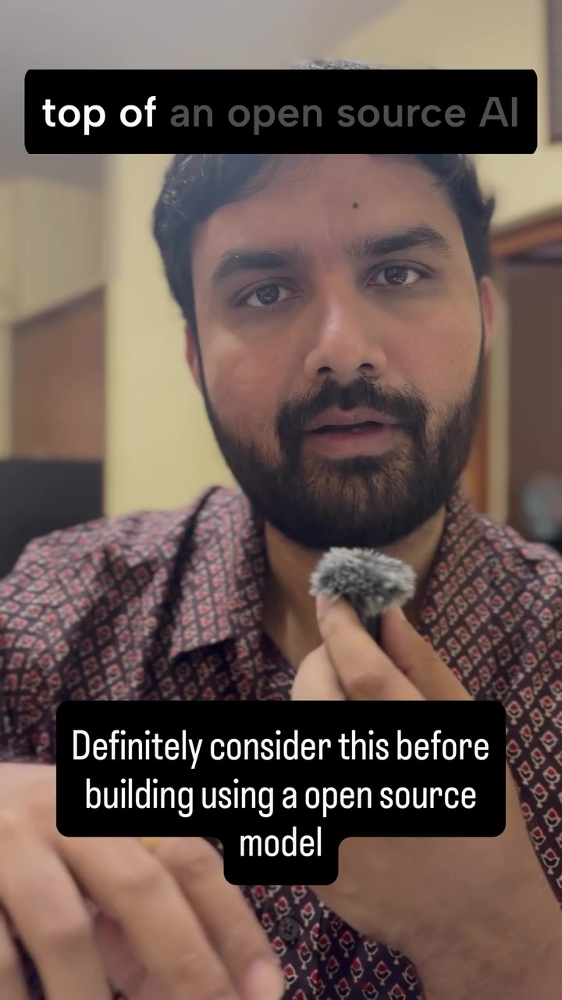
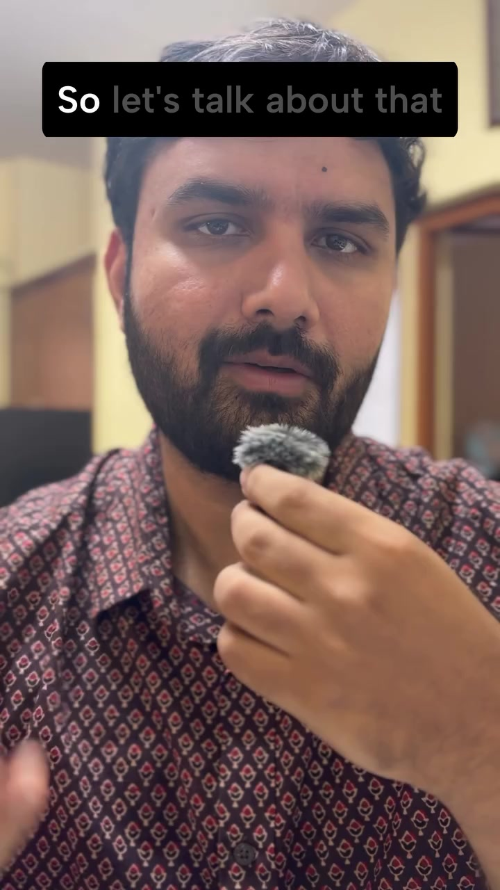
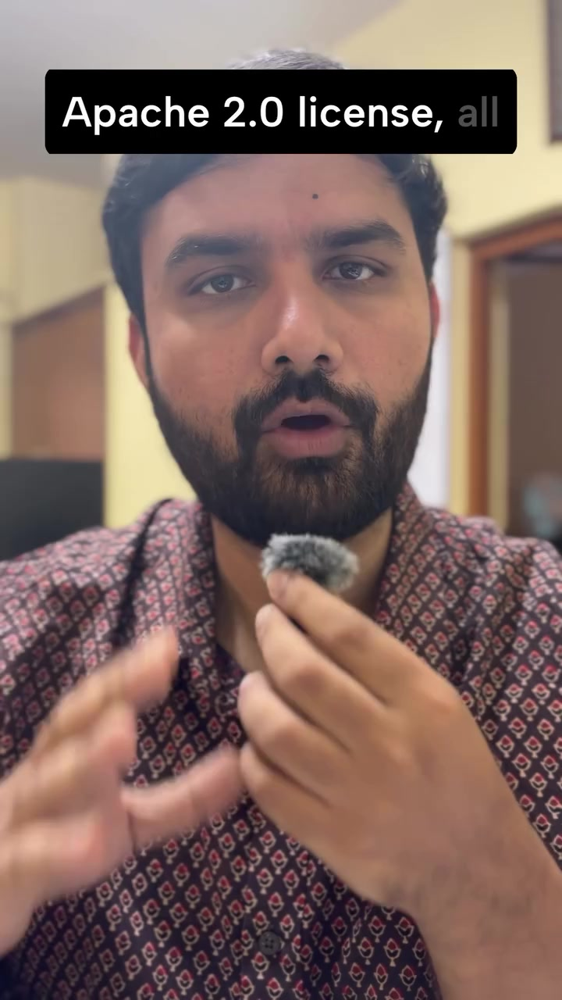
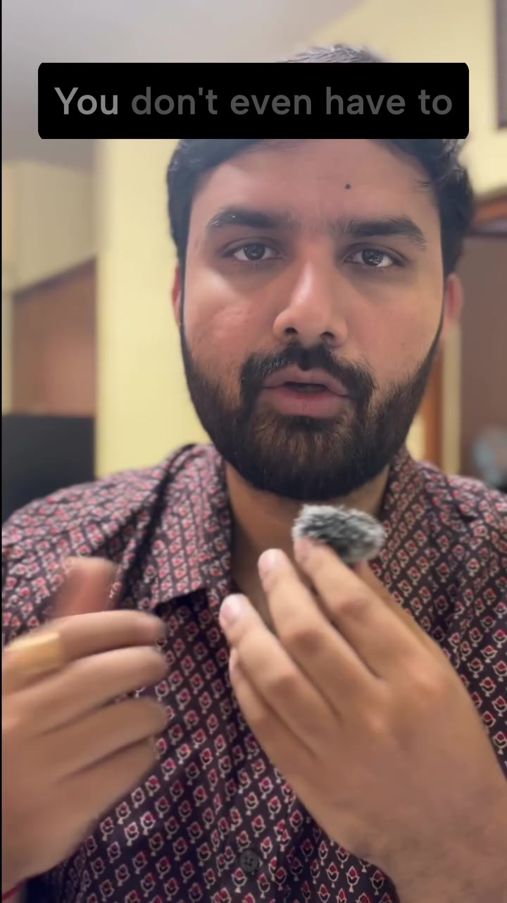

AI · Legal-Licensing
Open-Source AI Licensing: The Commercial vs Non-Commercial Liability Trap
Building an AI startup or commercial SaaS on open weights from Hugging Face without auditing license terms is a catastrophic legal risk. Many popular foundation weights and instruction-tuned checkpoints are published under non-commercial research licenses (e.g., CC-BY-NC 4.0) or custom enterprise covenants. If a commercial product monetizes models derived from or fine-tuned on non-commercial weights, the company faces immediate cease-and-desist orders, copyright infringement damages, and inability to close institutional acquisition due diligence.
Visual Reference Stills




The Two AI Licensing Camps
✅ Permissive Commercial Licenses
Freely usable in closed-source, proprietary, monetized SaaS platforms without royalties or user count ceilings.
- Apache 2.0: Explicit patent grant + commercial freedom (Mistral-7B base, Qwen-2.5 permissive tier, Whisper).
- MIT: Maximum permissiveness with zero commercial restrictions.
- BSD-3-Clause: Minimal attribution requirement.
⚠️ Restrictive / Non-Commercial Traps
Explicitly prohibits revenue generation, business operations, or restricts scale through custom usage clauses.
- CC-BY-NC 4.0: Strictly non-commercial. Any subscription fee, ad revenue, or enterprise deployment breaches copyright.
- Llama Community License: Requires explicit Meta license request if product exceeds 700 million Monthly Active Users (MAU).
- Synthetic Data Distillation Clause: Prohibits using model outputs to train competing frontier models (e.g. OpenAI ToS, Llama clause).
Crucial Licensing Gotchas for AI Engineers
A base pre-trained model may be released under Apache 2.0, but community instruction-tuned variants (e.g. fine-tuned on synthetic ShareGPT or WizardLM datasets) may carry CC-BY-NC contamination due to upstream dataset terms. Always audit the fine-tuning data lineage.
Generating synthetic training datasets by querying proprietary frontier APIs (GPT-4o, Claude 3.5 Sonnet) to train or distill your own open-source model violates the Terms of Service of major commercial model providers.
During M&A or Series A fundraising, technical auditors review every model weight hash, training dataset source URL, and license string. A single non-commercial model in core production infrastructure can halt investment or collapse valuations.